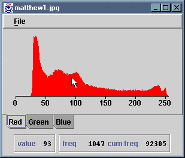

The HistogramTool application computes and displays the
histogram of an image. In the case of colour images, a tabbed display of
three separate histograms - for red, green and blue - is created. A
histogram can be inspected by moving the cursor over it. An information
panel beneath the histogram is continually updated with the grey level,
frequency and cumulative frequency for the point under cursor. A menu is
provided, from which the user may load a new image, save the current
histogram or quit the application.
The application consists of source files HistogramTool.java,
HistogramView.java and HistogramInfoPane.java.
Compilation of these files generates the .class files
HistogramTool.class HistogramView.class HistogramView$1.class HistogramInfoPane.class
These have been packaged as a single JAR file,
HistogramTool.jar. You can install the application by copying
this JAR file, along with either the MS-DOS batch file
HistogramTool.bat or the bash shell script
HistogramTool.sh, as appropriate. The batch file or script
should be edited to reflect the new location of the JAR file.